An editorial and digital design project exploring the Dead Sea Scrolls through a printed booklet and a dedicated website for a launch event featuring a film screening and public discussion.
Inspired by archival photographs and the irregular shapes of surviving scroll fragments, I developed a visual language that evokes archaeological research and discovery.
8.1
8.2
8.3


BRANDING
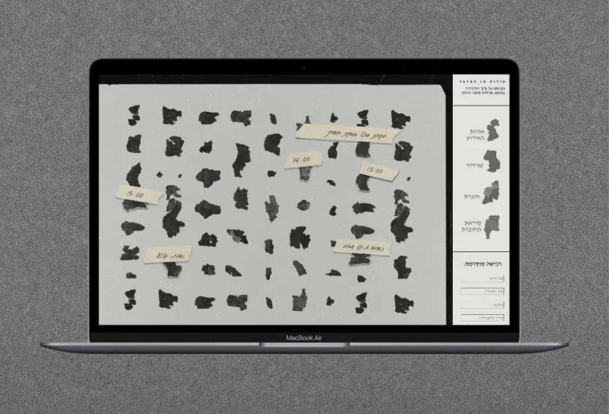
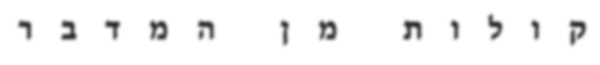
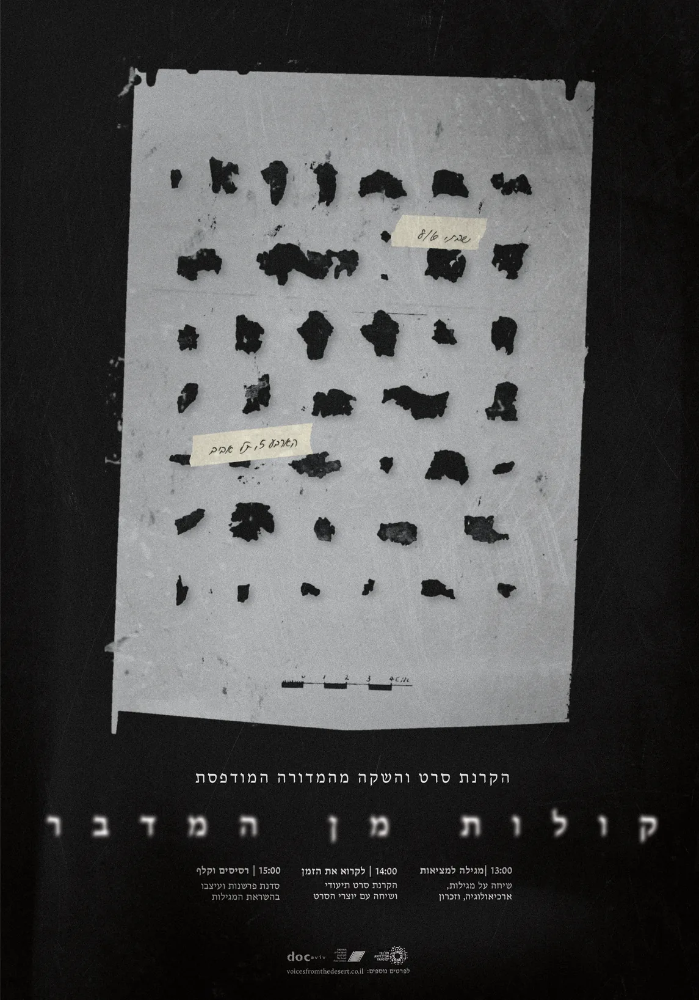
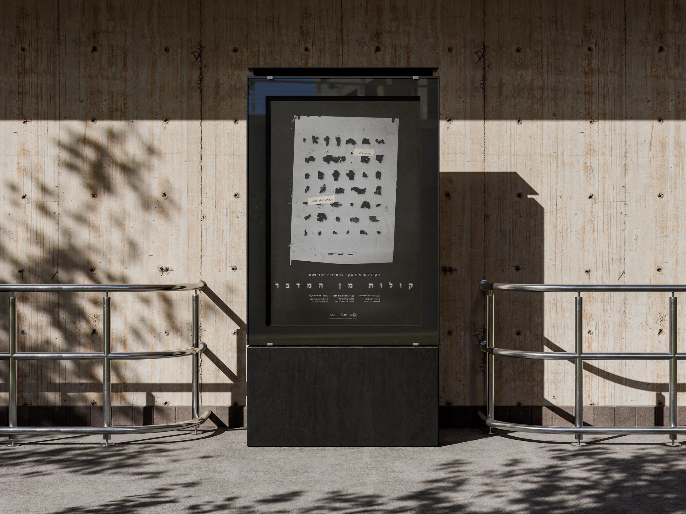

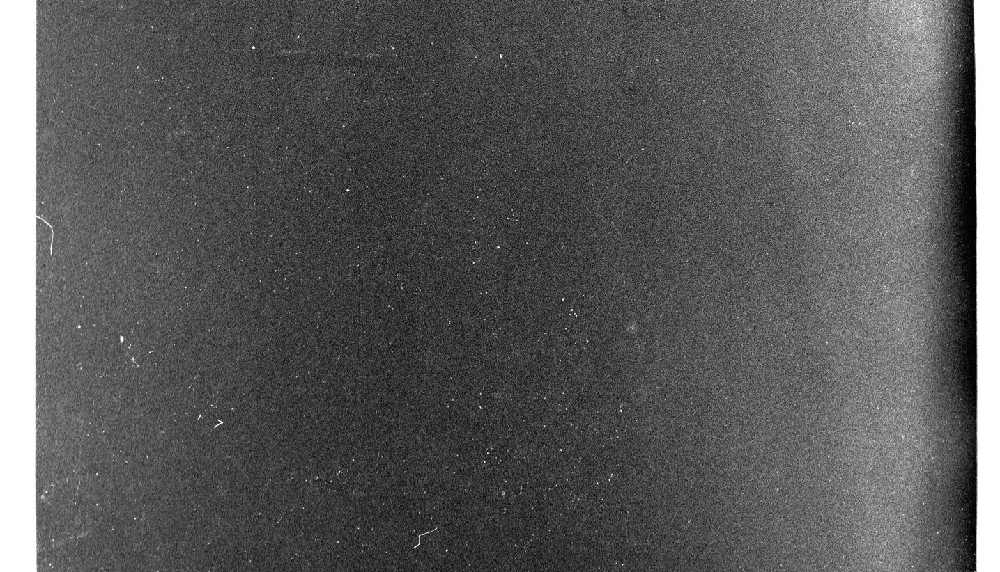
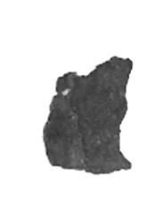
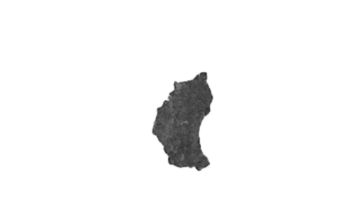
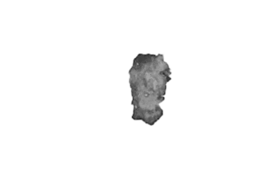
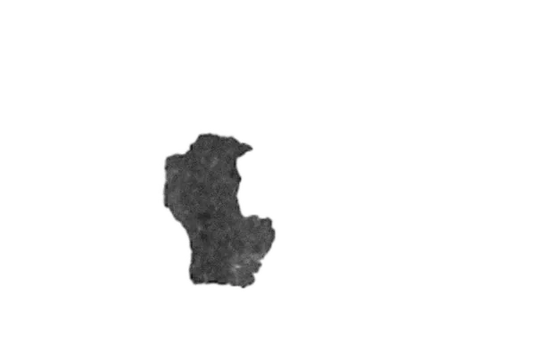


Voices From the Desert is an editorial project translating a Wikipedia article into a designed booklet. I chose the Dead Sea Scrolls, exploring how their history and physical form could guide the design.
THE BRIEF
Archival images of the scrolls also formed the basis of the website, extending the project into a digital format. The fragments provided a visual connection between the ancient material and its presentation on screen.
FROM PRINT TO SCREEN
I was drawn to the irregular shapes of the surviving scroll fragments. These became the starting point for a visual language that combines fragmented forms with the atmosphere of archaeological research.
VISUAL LANGUAGE
PLACE
Bezalel
YEAR
2025
FIELD
Typography

08/ VOICES FROM THE DESERT


MULTIDISCIPLINARY DESIGNER
BRANDING
UX/UI
TYPOGRAPHY
ILLUSTRATION
MULTIDISCIPLINARY DESIGNER
BRANDING
UX/UI
TYPOGRAPHY
ILLUSTRATION
MULTIDICIPLINARY DESIGNER
BRANDING
UX/UI
TYPOGRAPHY
ILLUSTRATION